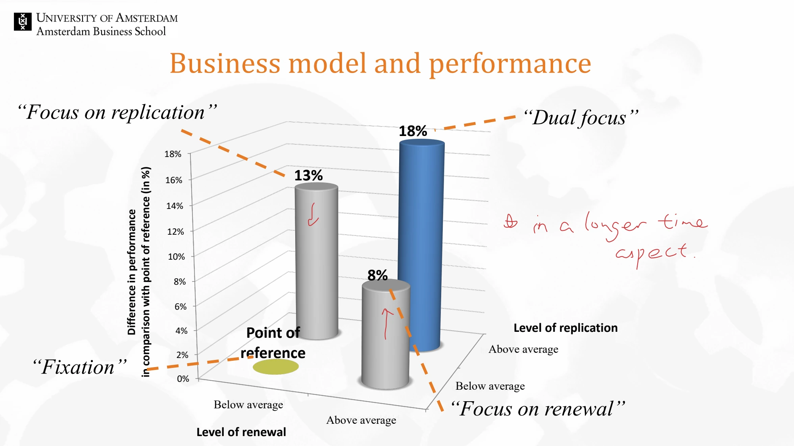

Original course material / Session 2 · Page 37
Business model and performance
An unedited view of the complete original lecture page. The descriptive page title is added for navigation.


Read the related study guide
Extracted original text
Automatic extraction from the original file. Reading order may differ, diagrams may be absent, and hidden text may be included. The image above is the visual source of record.
Business model and performance ondergemiddeld bovengemiddeld 0% 2% 4% 6% 8% 10% 12% 14% 16% 18% ondergemiddeld bovengemiddeld Point of reference 8% 13% 18% Level of replication Difference in performance in comparison with point of reference (in %) Level of renewal “Fixation” “Focus on renewal” “Focus on replication” “Dual focus” Below average Above average Above average Below average